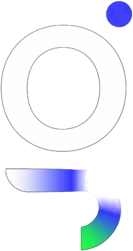

Indústria
Venda técnica e por cotação
Ciclo longo, decisão compartilhada e pedido de orçamento como conversão.

ARGOSA ARGOS transforma o digital em um canal de geração de demanda, oportunidades comerciais e crescimento para empresas que querem vender mais com estratégia.
Com o Método VQC, geramos volume, analisamos a qualidade das oportunidades e direcionamos os investimentos para aquilo que realmente pode se transformar em negócio.
Ciclo longo, decisão compartilhada e pedido de orçamento como conversão.
Calendário definido, concorrência local e decisão em família.
Proposta, reunião e relacionamento como etapas do funil.
Muitas vezes, sua empresa simplesmente não está capturando a demanda certa, ou não consegue transformar essa demanda em oportunidades reais de negócio. Talvez hoje sua empresa enfrente algum desses cenários:
Quando um potencial cliente procura pelo produto ou serviço que sua empresa oferece, outras marcas ocupam o espaço que poderia ser seu.
Existem acessos, seguidores, formulários e leads, mas poucas oportunidades realmente avançam para o comercial.
Sua equipe perde tempo atendendo pessoas que não possuem intenção, momento ou perfil para comprar.
Existem campanhas, anúncios e diferentes canais de aquisição, mas pouca clareza sobre quais ações estão contribuindo para gerar negócios.
O marketing comemora leads.O comercial quer oportunidades.
E, no meio dessa distância, sua empresa pode estar desperdiçando orçamento, tempo e potencial de crescimento.
O Método VQC conecta marketing, dados e comercial através de três etapas.
Estruturamos campanhas e canais para aumentar a presença da sua empresa diante das pessoas que estão procurando, ou podem precisar, daquilo que você oferece.
O objetivo inicial é gerar dados, alcance e oportunidades suficientes para entender melhor o comportamento do mercado.
Nem todo lead é uma oportunidade.
Analisamos os sinais gerados pelas campanhas para identificar quais públicos, mensagens, canais, ofertas e ações atraem contatos com maior aderência ao seu negócio.
Assim, o marketing deixa de trabalhar apenas para gerar quantidade e começa a perseguir qualidade comercial.
Com mais clareza sobre o que funciona, concentramos os esforços nas estratégias que apresentam maior potencial de gerar oportunidades, reuniões, propostas e vendas.
Gerar volume. Identificar o que qualifica. Escalar o que converte.
Quero aplicar o Método VQC →O Método VQC existe para aproximar marketing e comercial e construir uma visão mais clara sobre toda a jornada, da primeira interação até a conversão.
Antes de simplesmente aumentar o investimento em mídia ou iniciar novas campanhas, buscamos entender o cenário atual da sua aquisição. Analisamos pontos como:
Existe demanda pelo que sua empresa oferece?
Sua empresa está aparecendo para essa demanda?
Quem está capturando essas oportunidades hoje?
Os contatos gerados possuem o perfil desejado?
Quantos realmente avançam no processo comercial?
Quais canais estão trazendo as melhores oportunidades?
Onde os potenciais clientes estão sendo perdidos?
Marketing e comercial usam os mesmos dados para decidir?
A partir dessa análise, identificamos gargalos, oportunidades e possíveis caminhos de crescimento para a aquisição digital da sua empresa.
Quero receber meu diagnóstico →O que importa é gerar demanda, entender quem possui potencial, identificar o que gera oportunidades e investir melhor no que contribui para o crescimento comercial.
Sua empresa já possui produto, serviço, experiência, estrutura e capacidade de entrega. A ARGOS trabalha para fazer o mercado encontrar essa estrutura e transformar atenção em oportunidades reais de negócio.
Quero aplicar o VQC na minha empresa →Geramos demanda e dados suficientes para compreender melhor o mercado.
Identificamos quais oportunidades possuem maior aderência ao negócio.
Direcionamos a estratégia para aquilo que demonstra maior potencial comercial.
Responda algumas perguntas rápidas sobre o momento atual da sua empresa. A partir dessas informações, analisamos o cenário e identificamos oportunidades para tornar sua aquisição digital mais estratégica.
Começar meu diagnóstico →
Rápido, gratuito e sem compromisso de contratação.
Seus dados são utilizados apenas para preparar o diagnóstico e realizar o contato da ARGOS, de acordo com a LGPD.